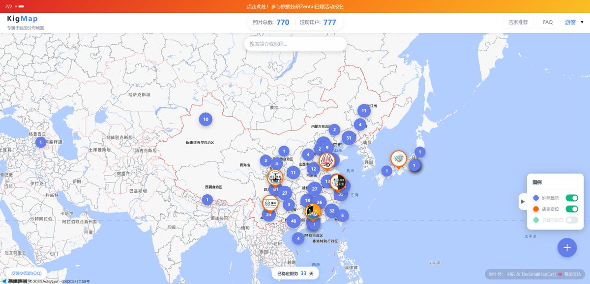
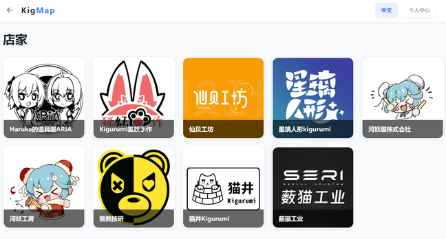
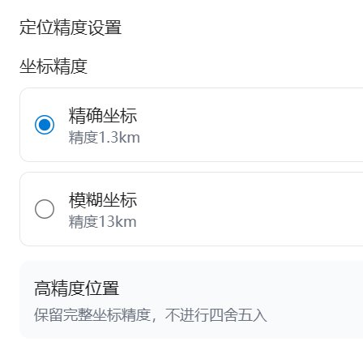

ジャンボ蜜柑
@JanboMikan
😱😱简直是一个我做梦会梦到的产品。
什么时候能出现一个xnnmap🥺



不稳定明矾混合物
@mingfan1145
【KigMap · 娃图 · 专属于娃的分布地图】
https://t.co/XmqB0oJojW | https://t.co/V8bdy5B6IH | https://t.co/qWqEgRlP6r
✅ 全国700+娃图 & 精选店铺实时收录
✅ 河妖、仙贝等9家店铺已入驻
✅ 自定义定位精度，告别“盒意味”
✅ 了解各个店家、连结同城同好
网站已上线33天，快来上传你的娃照吧！ https://t.co/g1EWPwDpdD